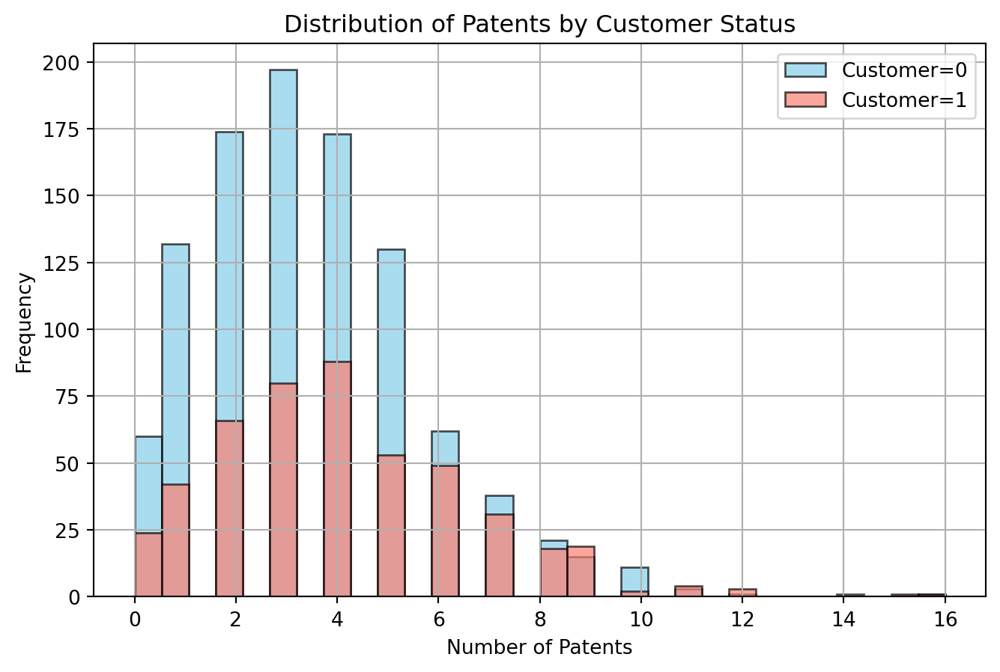
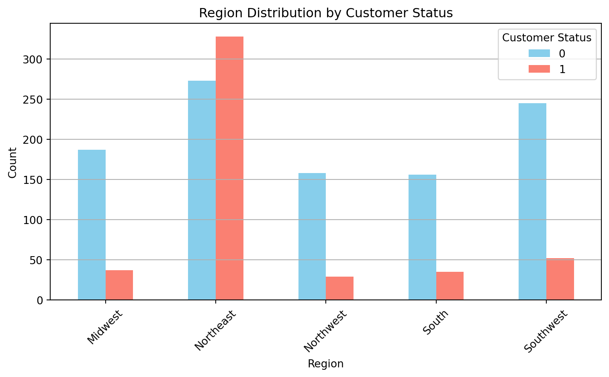
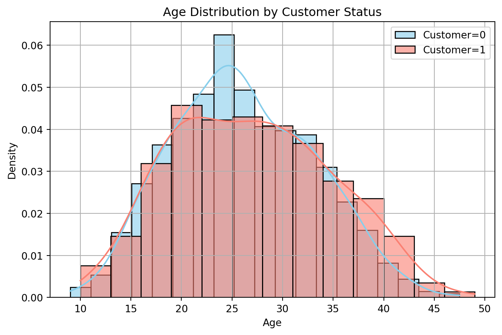
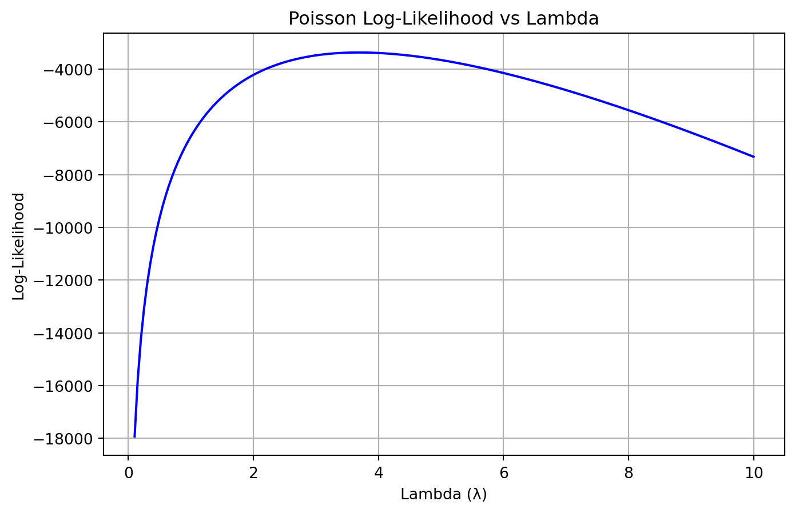

Blueprinty is a small firm that makes software for developing blueprints specifically for submitting patent applications to the US patent office. Their marketing team would like to make the claim that patent applicants using Blueprinty’s software are more successful in getting their patent applications approved. Ideal data to study such an effect might include the success rate of patent applications before using Blueprinty’s software and after using it. Unfortunately, such data is not available.
However, Blueprinty has collected data on 1,500 mature (non-startup) engineering firms. The data include each firm’s number of patents awarded over the last 5 years, regional location, age since incorporation, and whether or not the firm uses Blueprinty’s software. The marketing team would like to use this data to make the claim that firms using Blueprinty’s software are more successful in getting their patent applications approved.
Data
todo: Read in data.
todo: Compare histograms and means of number of patents by customer status. What do you observe?
We first read in the data and draw histograms for number of patents by customer status. We observed the distribution is more right skewed, and customer of Blueprinty seem to have more patents than non-customers in average.
import pandas as pdimport matplotlib.pyplot as pltdf = pd.read_csv("blueprinty.csv")colors = {0: 'skyblue', 1: 'salmon'}plt.figure(figsize=(8, 5))for status in df['iscustomer'].unique(): subset = df[df['iscustomer'] == status] plt.hist(subset['patents'], bins=30, alpha=0.7, label=f'Customer={status}', color=colors[status], edgecolor='black')plt.xlabel('Number of Patents')plt.ylabel('Frequency')plt.title('Distribution of Patents by Customer Status')plt.legend()plt.grid(True)plt.show()mean_patents = df.groupby('iscustomer')['patents'].mean()print(f"Mean number of patents by customer status:{mean_patents}")

Mean number of patents by customer status:iscustomer
0 3.473013
1 4.133056
Name: patents, dtype: float64
Blueprinty customers are not selected at random. It may be important to account for systematic differences in the age and regional location of customers vs non-customers.
Thus, we also look into the region and age distribution by customer status.
import seaborn as snsimport matplotlib.pyplot as pltregion_counts = df.groupby(['region', 'iscustomer']).size().unstack(fill_value=0)print(region_counts)region_counts.plot(kind='bar', figsize=(8, 5), color=['skyblue', 'salmon'])plt.title('Region Distribution by Customer Status')plt.xlabel('Region')plt.ylabel('Count')plt.legend(title='Customer Status')plt.xticks(rotation=45)plt.grid(axis='y')plt.tight_layout()plt.show()age_stats = df.groupby('iscustomer')['age'].agg(['mean', 'var'])print("Age mean and variance by customer status:")print(age_stats)plt.figure(figsize=(8, 5))for status, color inzip([0, 1], ['skyblue', 'salmon']): subset = df[df['iscustomer'] == status] sns.histplot(subset['age'], kde=True, color=color, label=f'Customer={status}', stat='density', alpha=0.6)plt.title('Age Distribution by Customer Status')plt.xlabel('Age')plt.ylabel('Density')plt.legend()plt.grid(True)plt.show()
iscustomer 0 1
region
Midwest 187 37
Northeast 273 328
Northwest 158 29
South 156 35
Southwest 245 52

Age mean and variance by customer status:
mean var
iscustomer
0 26.101570 48.238937
1 26.900208 61.069187

For the age distribution, we found that customers tend to be slightly older than non-customers. The age distributions are similar overall, but non-customer is more like normal distribution with age 25 having the largest density, while the customer’s density is flat within the range 20-30. Thus, customer shows higher variability in age.
Regionally, the Northeast stands out with the highest number of customer firms (328), while other regions such as the Southwest, Midwest, South, and Northwest have significantly fewer customers. This suggests that both firm age and geographic location may be associated with customer status, with the Northeast possibly representing a key market area.
Estimation of Simple Poisson Model
Since our outcome variable of interest can only be small integer values per a set unit of time, we can use a Poisson density to model the number of patents awarded to each engineering firm over the last 5 years. We start by estimating a simple Poisson model via Maximum Likelihood.
Here the likelihood function for Poisson distribution and the python code to caculate it.
import numpy as npfrom scipy.special import gammaln # For log(y!)def poisson_loglikelihood(lmbda, Y): Y = np.asarray(Y)return np.sum(-lmbda + Y * np.log(lmbda) - gammaln(Y +1))
Next, we use the function to plot lambda on the horizontal axis and the likelihood (or log-likelihood) on the vertical axis for a range of lambdas.
Y = df['patents']# Define a range of lambda valueslambda_range = np.linspace(0.1, 10, 200) # Avoid lambda=0 due to log(0)# Compute log-likelihoods for each lambdalog_likelihoods = [poisson_loglikelihood(lmbda, Y) for lmbda in lambda_range]plt.figure(figsize=(8, 5))plt.plot(lambda_range, log_likelihoods, color='blue')plt.title('Poisson Log-Likelihood vs Lambda')plt.xlabel('Lambda (λ)')plt.ylabel('Log-Likelihood')plt.grid(True)plt.show()

This plot shows the log likelihood function of a Poisson model for a range of lambda, using the observed number of patents as the input data. The curve peaks at the value of 3 that best fits the data, which is the maximum likelihood estimate (MLE).
We can also look at it in mathematical view:
The log-likelihood function for \(Y = \{y_1, y_2, \dots, y_n\}\) is:
This result feels right, because the mean of a Poisson distribution is \(\lambda\), and we’re estimating it using the sample mean.
Now we find the MLE by optimizing my likelihood function.
from scipy.optimize import minimize_scalar# Objective function: negative log-likelihood (for minimization)def neg_loglikelihood(lmbda):return-poisson_loglikelihood(lmbda, Y)# Use bounded scalar optimizationresult = minimize_scalar(neg_loglikelihood, bounds=(0.01, 10), method='bounded')lambda_mle = result.xprint(f"MLE of lambda: {lambda_mle:.4f}")
MLE of lambda: 3.6847
Estimation of Poisson Regression Model
Next, we extend our simple Poisson model to a Poisson Regression Model such that \(Y_i = \text{Poisson}(\lambda_i)\) where \(\lambda_i = \exp(X_i'\beta)\). The interpretation is that the success rate of patent awards is not constant across all firms (\(\lambda\)) but rather is a function of firm characteristics \(X_i\). Specifically, we will use the covariates age, age squared, region, and whether the firm is a customer of Blueprinty.
Now we create a new log-likelihood function for Poisson model with an additional argument to take in a covariate matrix X. We will use it to find the MLE vector and the Hessian of the Poisson model with covariates. Then we will use the Hessian to find standard errors of the beta parameter estimates and present a table of coefficients and standard errors.
from scipy.special import gammalnfrom scipy.optimize import minimizeimport mathdef poisson_regression_loglikelihood(beta, Y, X): beta = np.asarray(beta).ravel() X = np.asarray(X) Y = np.asarray(Y) linpred = X.dot(beta) linpred = np.clip(linpred, -100, 100) mu = np.array([math.exp(val) for val in linpred])if np.any(mu <=0) or np.any(np.isnan(mu)):return-np.infreturn np.sum(Y * np.log(mu) - mu - gammaln(Y +1))df['age_squared'] = df['age'] **2region_dummies = pd.get_dummies(df['region'], drop_first=True)X = pd.concat([ pd.Series(1, index=df.index, name='intercept'), df[['age', 'age_squared', 'iscustomer']], region_dummies], axis=1)Y = df['patents'].valuesX_matrix = X.valuesdef neg_loglikelihood(beta, Y, X):return-poisson_regression_loglikelihood(beta, Y, X)# Optimize to find MLEinitial_beta = np.zeros(X_matrix.shape[1])result = minimize(neg_loglikelihood, x0=initial_beta, args=(Y, X_matrix), method='BFGS')# Extract MLE and Hessian inversebeta_mle = result.xhess_inv = result.hess_inv# Ensure Hessian inverse is arrayifnotisinstance(hess_inv, np.ndarray): hess_inv = hess_inv.todense()hess_inv = np.asarray(hess_inv)# Compute standard errorsstd_errors = np.sqrt(np.diag(hess_inv))# Build results tableresults_df = pd.DataFrame({"Coefficient": beta_mle,"Std. Error": std_errors}, index=X.columns)results_df
Coefficient
Std. Error
intercept
-0.509992
0.000099
age
0.148706
0.003625
age_squared
-0.002972
0.000095
iscustomer
0.207609
0.028353
Northeast
0.029155
0.042425
Northwest
-0.017578
0.053198
South
0.056565
0.051524
Southwest
0.050567
0.046869
Now we check our results using Python sm.GLM() function.
import statsmodels.api as smX_numeric = X.astype(float)Y_numeric = Y.astype(float)poisson_model = sm.GLM(Y_numeric, X_numeric, family=sm.families.Poisson())poisson_results = poisson_model.fit()print(poisson_results.summary())# And to extract coeffs and SEs:import pandas as pdresult_table = pd.DataFrame({'coef': poisson_results.params,'std_err': poisson_results.bse})print(result_table)
From the result above, we can see age has a strong nonlinear relationship with patent counts: the negative age squared term and the positive age term shows that age increases the expected log count until 25, and then make it decline afterwards. Blueprinty customers produce about 23 percent more patents than non-customers (exp(0.208)≈1.23, p < .001), given all other conditions equal. Once age and customer status are accounted for, none of the regions—Northeast, Northwest, South, or Southwest—differs significantly from the Midwest baseline.
Now we want to conclude on the effect of Blueprinty’s software on patent success. Because the beta coefficients are not directly interpretable, we create two fake datasets: X_0 and X_1 where X_0 is the X data but with iscustomer=0 for every observation and X_1 is the X data but with iscustomer=1 for every observation. Then, we use X_0 and your fitted model to get the vector of predicted number of patents (y_pred_0) for every firm in the dataset, and use X_1 to get Y_pred_1 for every firm. Then subtract y_pred_1 minus y_pred_0 and take the average of that vector of differences._
We can see that, on average, Blueprinty customers are expected to produce approximately 0.79 more patents than if they were not customers, holding all other variables constant.
AirBnB Case Study
Introduction
AirBnB is a popular platform for booking short-term rentals. In March 2017, students Annika Awad, Evan Lebo, and Anna Linden scraped of 40,000 Airbnb listings from New York City. The data include the following variables:
Variable Definitions
- `id` = unique ID number for each unit
- `last_scraped` = date when information scraped
- `host_since` = date when host first listed the unit on Airbnb
- `days` = `last_scraped` - `host_since` = number of days the unit has been listed
- `room_type` = Entire home/apt., Private room, or Shared room
- `bathrooms` = number of bathrooms
- `bedrooms` = number of bedrooms
- `price` = price per night (dollars)
- `number_of_reviews` = number of reviews for the unit on Airbnb
- `review_scores_cleanliness` = a cleanliness score from reviews (1-10)
- `review_scores_location` = a "quality of location" score from reviews (1-10)
- `review_scores_value` = a "quality of value" score from reviews (1-10)
- `instant_bookable` = "t" if instantly bookable, "f" if not
# EDAplt.figure(); plt.hist(df['number_of_reviews'], bins=50); plt.title('Distribution of Number of Reviews'); plt.xlabel('Number of Reviews'); plt.ylabel('Frequency'); plt.show()plt.figure(); plt.scatter(df['price'], df['number_of_reviews'], alpha=0.3); plt.title('Price vs Number of Reviews'); plt.xlabel('Price'); plt.ylabel('Number of Reviews'); plt.xlim(0, 1000); plt.show()plt.figure(); plt.scatter(df['days'], df['number_of_reviews'], alpha=0.3); plt.title('Days Listed vs Number of Reviews'); plt.xlabel('Days Listed'); plt.ylabel('Number of Reviews'); plt.show()plt.figure(); sns.boxplot(x='room_type', y='number_of_reviews', data=df); plt.title('Room Type vs Number of Reviews'); plt.xlabel('Room Type'); plt.ylabel('Number of Reviews'); plt.show()print(df[['number_of_reviews','days','bathrooms','bedrooms','price']].corr())
Here we run a Poisson regression and to describe variation in the number of reviews as a function of the variables provided:
Baseline (Intercept)
Intercept = 2.7715
((2.7715))
– Expected number of reviews for the reference listing (entire home/apt, non-instant-bookable, 0 days listed, $0 price, 0 bedrooms, 0 bathrooms).
Days listed (days)
(= +0.00005022)
((0.00005022))
– +0.005% expected reviews per extra day listed.
– Over 100 days: ((1.0000502)^{100}) → 0.5% increase.
Price (price)
(= -0.0005)
((-0.0005))
– –0.05% expected reviews per $1 increase.
– For $100 more: ((-0.0005)) → 4.9% decrease.
Bathrooms (bathrooms)
(= -0.1064)
((-0.1064))
– 10.1% fewer expected reviews per additional bathroom.
Bedrooms (bedrooms)
(= +0.0982)
((0.0982))
– 10.3% more expected reviews per additional bedroom.
Room type (room_type, reference = Entire home/apt)